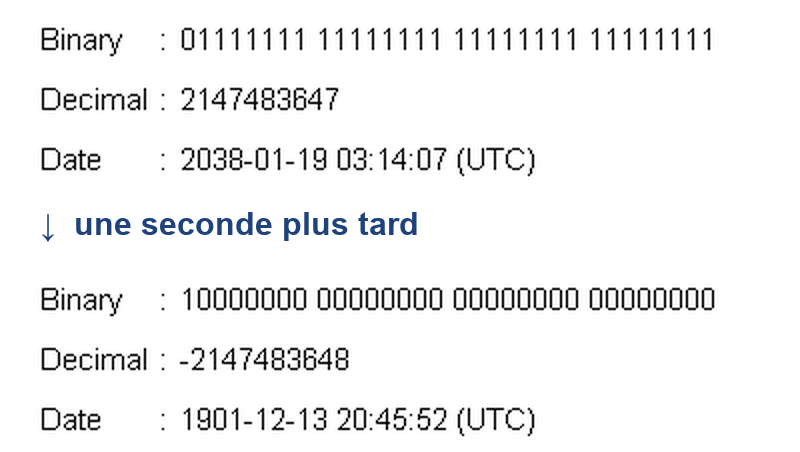
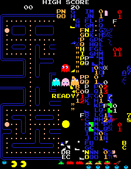

hello.asm
; hello.asm : affiche "Hello World!" puis quitte
section .data
msg db "Hello World!", 10 ; texte ASCII + saut de ligne (10)
len equ $ - msg ; longueur : adresse fin - adresse début
section .text
global _start
_start:
mov rax, 1 ; appel système write
mov rdi, 1 ; 1er argument : afficher sur l'écran
mov rsi, msg ; 2e argument : l'adresse du message
mov rdx, len ; 3e argument : sur len octets
syscall ; le noyau exécute write
mov rax, 60 ; appel système exit
mov rdi, 0 ; 1er argument : code de retour 0
syscall ; exit lit le code de retour dans rdi
$ nasm -f elf64 hello.asm -o hello.o
$ ld hello.o -o hello
$ ./hello
Hello World!
$ echo $?
0
Le programme affiche un message puis s'arrête en renvoyant un nombre, son code de retour : 0 signifie que tout s'est bien passé. echo $? affiche le code de retour du dernier programme lancé.
💡 Ne cherchez pas encore à tout comprendre : chaque ligne est expliquée au fil du cours.
total = 7;
total = total + 5;
Lisible par un humain, indépendant du processeur
mov eax, 7
add eax, 5
Une ligne = une instruction au processeur
b8 07 00 00 00
83 c0 05
Les octets que le processeur lit et exécute
mov, add… Ces noms s'appellent des mnémoniqueshello.asmhello.ohello./hellogcc enchaîne ces étapes pour vous : il compile le C en assembleur, puis appelle l'assembleur et l'éditeur de liens.
💡 Le fichier .o est un fichier objet : du code machine dont les adresses mémoire ne sont pas encore fixées. ld vient de loader (chargeur) : c'est l'éditeur de liens du projet GNU.
Chaque famille de processeurs a son propre jeu d'instructions : la liste des instructions qu'elle sait exécuter.
| Famille | Où la trouve-t-on ? | Instruction |
|---|---|---|
| x86-64 (Intel, AMD) | PC, serveurs, la plupart des logiciels malveillants | add eax, 5 |
| ARM | Smartphones, Mac à puce Apple, Raspberry Pi | add w0, w0, #5 |
| RISC-V | Architecture ouverte et libre de droits, en plein essor | addi a0, a0, 5 |
💡 ARM : Advanced RISC Machines. RISC : Reduced Instruction Set Computer (jeu d'instructions réduit). Dans ce module : x86-64 sous Linux, syntaxe Intel (destination à gauche).
Vu en 2ARCH, utilisé à chaque ligne en assembleur.
0xFF = 255, 0x2A = 42'0' = 0x30, 'A' = 0x41, saut de ligne = 10 (0x0A)💡 Le préfixe 0x annonce un nombre écrit en hexadécimal (base 16). Sans préfixe, un nombre est lu en décimal. Chiffres 0 à 9, puis A = 10 … F = 15. Chaque rang pèse 16 fois plus que celui de droite : 0x2A = 2 × 16 + 10 = 42 et 0xFF = 15 × 16 + 15 = 255.
| Caractère | Décimal | Hexa | Binaire |
|---|---|---|---|
| saut de ligne | 10 | 0x0A | 00001010 |
| espace | 32 | 0x20 | 00100000 |
'0' | 48 | 0x30 | 00110000 |
'7' | 55 | 0x37 | 00110111 |
'A' | 65 | 0x41 | 01000001 |
'H' | 72 | 0x48 | 01001000 |
'a' | 97 | 0x61 | 01100001 |
💡 Table complète : ASCII sur Wikipédia. Elle code 128 caractères, de 0 à 127.
0x30 + n. En hexa, le chiffre se lit à droite : '7' = 0x37 = 550x40 + k en majuscule et 0x60 + k en minuscule. 'H', 8e lettre, vaut 0x480x20) : 'a' − 'A' = 97 − 65hello.asm est rangé en 0x48 0x65 0x6c 0x6c 0x6f… ("Hello…"). La commande strings repère ces codes pour lire le texte d'un programme.hello, octet par octet
$ objdump -s -j .data hello
Contents of section .data:
402000 48656c6c 6f20576f 726c6421 0a Hello World!.
| Adresse | 402000 | 402001 | 402002 | 402003 | 402004 | 402005 | … | 40200c |
|---|---|---|---|---|---|---|---|---|
| Octet | 48 | 65 | 6c | 6c | 6f | 20 | … | 0a |
| Caractère | H | e | l | l | o | espace | … | saut |
402000 n'est pas une donnée : c'est l'adresse mémoire (en hexa), choisie par ld, où le message sera rangé quand le programme tourneramsg désigne cette adresse : mov rsi, msg met 0x402000 dans rsi. Les 13 octets vont jusqu'à 40200c : c'est lenUn nombre signé porte un signe, + ou −. Seul le bit de gauche change de valeur : 128 en lecture non signée (0 à 255), −128 en lecture signée (−128 à 127).
| non signée | 128 | 64 | 32 | 16 | 8 | 4 | 2 | 1 |
|---|---|---|---|---|---|---|---|---|
| signée | −128 | 64 | 32 | 16 | 8 | 4 | 2 | 1 |
11111111 = 0xFF se lit 255 en non signé, mais −128 + 64 + 32 + 16 + 8 + 4 + 2 + 1 = −1 en signé. De même, 11000000 = −128 + 64 = −64.
En signé, un bit de gauche à 1 signale un nombre négatif.
💡 Pour 255 en signé, il faut 16 bits (−32 768 à 32 767).
Écrire −1 sur 8 bits
| 1 | 0 | 0 | 0 | 0 | 0 | 0 | 0 | 1 |
|---|---|---|---|---|---|---|---|---|
| inverser | 1 | 1 | 1 | 1 | 1 | 1 | 1 | 0 |
| + 1 | 1 | 1 | 1 | 1 | 1 | 1 | 1 | 1 |
Chaque 0 devient 1 et chaque 1 devient 0, puis on ajoute 1 : 11111111 = 0xFF = −1.
0xFF vaut 255 ou −1 : c'est vous, dans le programme, qui choisissez la lecture. Pour multiplier, mul lit en non signé et imul (i pour integer, entier) en signé.hello.asm renvoie −2Je change le code de retour :
mov rax, 60 ; exit : quitter
mov rdi, -2 ; code de retour −2
$ ./hello
Hello World!
$ echo $?
254
Le programme met bien −2 dans rdi. Mais Linux ne garde du code de retour qu'un octet, lu non signé (de 0 à 255) : 11111110 s'affiche 254.
| −2 | 1 | 1 | 1 | 1 | 1 | 1 | 1 | 0 |
|---|
Lecture signée : −128 + 126 = −2. Lecture non signée : 128 + 126 = 254.
Des données de plusieurs tailles
| Taille | Nom | NASM | Pour ranger… |
|---|---|---|---|
| 8 bits | byte | db | un caractère |
| 16 bits | word | dw | un entier ≤ 65 535 |
| 32 bits | dword | dd | un entier ≤ 4 milliards |
| 64 bits | qword | dq | un grand entier, une adresse |
💡 Chaque donnée prend la place dont elle a besoin. byte = octet. word (mot) : 16 bits, la taille de travail des premiers x86. dword et qword : double et quadruple mot.
💡 db (define byte) n'est pas une instruction du processeur mais une pseudo-instruction : l'assembleur écrit ces octets dans le programme.
Le petit-boutisme (little-endian)
Un nombre de plusieurs octets est rangé en mémoire en commençant par l'octet de poids faible. C'est celui qui vaut le moins : les deux chiffres hexa de droite. Le dword 0x11223344 donne :
| Adresse | +0 | +1 | +2 | +3 |
|---|---|---|---|---|
| Octet | 44 | 33 | 22 | 11 |
Pourquoi c'est utile : les outils affichent la mémoire octet par octet, donc un nombre y apparaît à l'envers. total dq 1000 (soit 0x3E8) s'affiche e8 03 00 00 00 00 00 00 : dq occupe toujours 8 octets, même si 1000 n'en remplit que 2.
Le bug de l'an 2038 (lecture signée)

Linux compte les secondes depuis le 1er janvier 1970 dans un entier signé de 32 bits. Le 19 janvier 2038, le bit de gauche passe à 1 : le nombre devient négatif et la date revient en 1901.
Le niveau 256 de Pac-Man (un octet)

Le jeu d'arcade (1980) range le numéro de niveau dans un octet (0 à 255). Au niveau 256, le calcul qui dessine les fruits déborde : la moitié droite de l'écran se remplit de symboles et le niveau ne peut pas être terminé.
0xBEEF ?'H' vaut 0x48. Que vaut 'h' ?0xFE : 2 = 0000 0010, inversé 1111 1101, + 1EF puis BE : poids faible en premier0x68 : une minuscule vaut sa majuscule + 32 (0x20), soit 72 + 32 = 104★ À retenir dès aujourd'hui : ceux de hello.asm | Les autres | ||||
|---|---|---|---|---|---|
| Registre | Nom complet | Usage | Registre | Nom complet | Usage |
rax | accumulator | n° d'appel système, résultat | rbx | base | libre, pour vos calculs |
rdi | destination index | 1er argument | rcx | counter | compteur de boucle |
rsi | source index | 2e argument | rsp | stack pointer | sommet de la pile, à ne pas toucher |
rdx | data | 3e argument | rbp | base pointer | base de la pile |
r8 à r15 : huit registres de plus, simplement numérotés. Seul r8 servira, au TP2. | |||||
💡 Un registre est une case de mémoire à l'intérieur du processeur. Le r de rax, rip… vient de register.
rbx, rcx…), mais jamais rsp.rip contrôle le programmerip (instruction pointer, pointeur d'instruction) contient l'adresse de la prochaine instruction. Le processeur répète sans fin le même cycle d'exécution : lire l'instruction rangée à l'adresse rip, faire avancer rip jusqu'à la suivante, puis exécuter l'instruction lueriprip, ces octets deviennent des instructions : c'est l'injection de code.
Prendre le contrôle de rip est le but de la plupart des attaques sur les binaires.
rip avancer dans GDB à chaque instruction. Au TP3, vous le modifierez pour sauter par-dessus la vérification d'un mot de passe.rbx, rcx, rdx (ebx, bx, bl…) et pour r8 (r8d, r8w, r8b)al ou ax ne modifie que ces bits : le reste de rax est conservé. Piège : écrire dans eax met à zéro les 32 bits de poids fort💡 Les lettres : a = accumulator, le registre où « s'accumulent » les résultats des calculs ; r = register, e = extended, x = ax regroupe h = high et l = low, ses octets de poids fort et faible. Pour r8 : d = dword, w = word, b = byte.
al ou un nombre de 32 bits dans eax.Après chaque calcul (add, sub…), l'ALU (Arithmetic Logic Unit, l'unité de calcul) note automatiquement quelques informations sur le résultat : les indicateurs, des bits du registre rflags. Le code ne les écrit jamais : les calculs les mettent à jour, d'autres instructions les lisent.
| Indicateur | Vaut 1 quand… |
|---|---|
| ZF (Zero Flag) | le résultat est nul |
| SF (Sign Flag) | le résultat est négatif (bit de gauche à 1) |
| CF (Carry Flag) | une retenue sort : débordement non signé |
| OF (Overflow Flag) | débordement signé |
mov al, 255
add al, 1 ; al = 0, ZF = 1, CF = 1
mov al, 127
add al, 1 ; al = -128, SF = 1, OF = 1
💡 Vous connaissiez Z et N avec votre ALU de 2ARCH : ce sont ZF et SF.
; pin.asm : renvoie 0 si le code vaut 1234, sinon 1
section .text
global _start
_start:
mov rax, 1234 ; le code saisi
mov rdi, 1 ; par défaut : refusé (1)
cmp rax, 1234 ; compare : ZF = 1 si égaux
jne end ; si différent (ZF = 0), sauter à end
mov rdi, 0 ; sinon : accepté (0)
end:
mov rax, 60 ; exit, code de retour rdi
syscall
$ ./pin ; echo $?
0
En pseudo-code : si le code vaut 1234, renvoyer 0 (accepté), sinon renvoyer 1 (refusé).
cmp (compare) calcule rax − 1234 sans garder le résultat, pour mettre à jour les indicateursjne (jump if not equal) saute si ZF = 0, donc si les valeurs diffèrent💡 Avec mov rax, 1111, echo $? affiche 1.
; hello.asm : affiche "Hello World!" puis quitte
section .data
msg db "Hello World!", 10 ; texte ASCII + saut de ligne (10)
len equ $ - msg ; longueur : adresse fin - adresse début
section .text
global _start
_start:
mov rax, 1 ; appel système write
mov rdi, 1 ; 1er argument : afficher sur l'écran
mov rsi, msg ; 2e argument : l'adresse du message
mov rdx, len ; 3e argument : sur len octets
syscall ; le noyau exécute write
mov rax, 60 ; appel système exit
mov rdi, 0 ; 1er argument : code de retour 0
syscall ; exit lit le code de retour dans rdi
💡 ; commence un commentaire. Les noms .text et .data sont imposés : ils fixent les droits (code exécutable, données modifiables).
section .data : les données ; section .text : le codemsg, _start : des étiquettes, des noms donnés à une adresse. msg joue le rôle d'une variable, _start celui du main d'un programme Cdb (define byte) range des octets : les 12 caractères du message, puis 10, le saut de lignelen equ $ - msg : equ (equate) donne un nom à une constante. $ vaut l'adresse (pas son contenu) juste après le message : 0x40200d. len = 0x40200d − 0x402000 = 13, le nombre d'octets entre deux adresses (12 caractères + le saut de ligne)| Ligne | Ce qu'elle fait |
|---|---|
global _start | rend l'étiquette _start visible de ld, qui sait ainsi où le programme commence |
_start: | l'étiquette de la première instruction exécutée |
mov rax, 1 | copie 1 dans rax (mov : destination à gauche). 1 est le numéro de l'appel système write (écrire) |
mov rdi, 1 | 1er argument de write : où écrire. 1 = la sortie standard, l'écran |
mov rsi, msg | 2e argument : l'adresse du message (0x402000) |
mov rdx, len | 3e argument : le nombre d'octets à écrire (13) |
syscall | demande au noyau (le cœur de Linux, seul autorisé à écrire à l'écran) d'exécuter l'appel : Hello World! s'affiche |
mov rax, 60 | le numéro de l'appel système exit (quitter) |
mov rdi, 0 | copie 0 dans rdi : le code de retour à transmettre. Rien n'est encore renvoyé |
syscall | le noyau lit rdi, arrête le programme et transmet ce 0 (« tout s'est bien passé ») |
$ nasm -f elf64 -g -F dwarf hello.asm -o hello.o
$ ld hello.o -o hello
$ ./hello
Hello World!
| Morceau | Rôle |
|---|---|
nasm | l'assembleur : traduit hello.asm en octets |
-f elf64 | format ELF (Executable and Linkable Format) des programmes Linux, en 64 bits |
-g -F dwarf | débogage au format DWARF : quelle ligne a produit quels octets, pour que GDB montre le source |
-o hello.o | le fichier produit (-o : output ; l'extension .o : objet) |
ld hello.o -o hello | ld (de loader), l'éditeur de liens : produit l'exécutable |
💡 ./hello lance le programme du dossier courant ; make hello fait les deux premières étapes.
Un programme ne peut pas parler seul à l'écran ou au clavier. Il demande ce service au noyau par un appel système : le numéro de l'appel dans rax, ses arguments dans rdi, rsi et rdx, puis l'instruction syscall. Le résultat revient dans rax.
Appel (n° dans rax) | Ce qu'il fait | rdi | rsi | rdx |
|---|---|---|---|---|
| write (1) | affiche des octets | où écrire : 1 = l'écran | l'adresse du texte | le nombre d'octets |
| read (0) | lit ce qu'on tape | d'où lire : 0 = le clavier | l'adresse où ranger le texte | le nombre d'octets au plus |
| exit (60) | quitte le programme | le code de retour | – | – |
💡 Les numéros 0 (clavier), 1 (écran) et 2 (messages d'erreur) s'appellent des descripteurs. Liste complète : table des appels système Linux x86-64.
hello.asm : rax = 1 (write), rdi = 1 (l'écran), rsi = msg (le texte), rdx = len (13 octets), puis syscall.writeLes registres servent de formulaire : syscall passe la main au noyau, qui le lit et rend le service.
| Instruction | Effet | Exemple |
|---|---|---|
mov dst, src | copie src dans dst (de move, « déplacer », mais src reste intact) | mov rax, 7 |
add dst, src | dst = dst + src | add rax, rbx |
sub dst, src | dst = dst - src | sub rax, 6 |
imul dst, src | dst = dst × src (entiers signés) | imul rax, 3 |
inc dst / dec dst | ajoute ou retire 1 | inc rcx |
neg dst | change le signe (complément à deux) | neg rax |
xor dst, dst | met dst à zéro (écriture courte et rapide) | xor rdi, rdi |
7) ou une case mémoire ([adresse])
; compute.asm : renvoie (7 + 5) * 3 - 6
section .text
global _start
_start:
mov rax, 7 ; rax = 7
add rax, 5 ; rax = 7 + 5 = 12
imul rax, 3 ; rax = 12 * 3 = 36
sub rax, 6 ; rax = 36 - 6 = 30
mov rdi, rax ; code de retour = résultat
mov rax, 60 ; exit
syscall
$ make compute
$ ./compute
$ echo $?
30
Afficher un nombre demande de le convertir en caractères. En attendant, le code de retour (la valeur donnée à exit) sert de sortie : echo $? l'affiche pour le dernier programme lancé.
Le code de retour tient sur un octet : il est lu modulo 256.
hello.asm ?
section .data
msg db "Hello World!", 10
len equ $ - msg
section .text
global _start
_start:
mov rax, 1
mov rdi, 1
mov rsi, msg
mov rdx, len
syscall
mov rax, 60
mov rdi, 0
syscall
1. On remplace mov rdx, len par mov rdx, 5. Qu'affiche le programme ?
Hello : les 5 premiers octets. Sans le saut de ligne, l'invite $ se colle au texte2. On remplace le message par "Bonjour", 10. Que vaut len ? Faut-il changer autre chose ?
$ - msg se recalcule3. On remplace mov rdi, 0 par mov rdi, 7. Qu'affiche echo $? ?
exit renvoie la valeur de rdihello.asm au ralenti
$ gdb -q ./hello
(gdb) break _start
Breakpoint 1 at 0x401000: file hello.asm, line 9.
(gdb) run
Breakpoint 1, _start () at hello.asm:9
9 mov rax, 1 ; appel système write
(gdb) si
10 mov rdi, 1 ; 1er argument : afficher sur l'écran
(gdb) info registers rax
rax 0x1 1
(gdb) si
11 mov rsi, msg ; 2e argument : l'adresse du message
(gdb) si
12 mov rdx, len ; 3e argument : sur len octets
(gdb) si
13 syscall ; le noyau exécute write
(gdb) info registers rdi rsi rdx
rdi 0x1 1
rsi 0x402000 4202496
rdx 0xd 13
(gdb) si
Hello World!
15 mov rax, 60 ; appel système exit
GDB (GNU Debugger) exécute le programme instruction par instruction et montre les registres à chaque pas.
| Commande | Effet |
|---|---|
break _start | s'arrêter au début |
run | lancer jusqu'à l'arrêt |
si | exécuter une instruction |
info registers | afficher des registres |
💡 La ligne affichée est celle qui va s'exécuter. Juste avant syscall, on voit le « formulaire » rempli : 1, l'adresse du message, 13.
db, dw, dd, dq et petit-boutisme : l'octet de poids faible est rangé en premierrip contient l'adresse de la prochaine instruction : le contrôler, c'est contrôler le programmeeax, ax, al) et des indicateurs (ZF, SF, CF, OF)rax, arguments dans rdi, rsi, rdx, puis syscallbreak, run, si, info registers